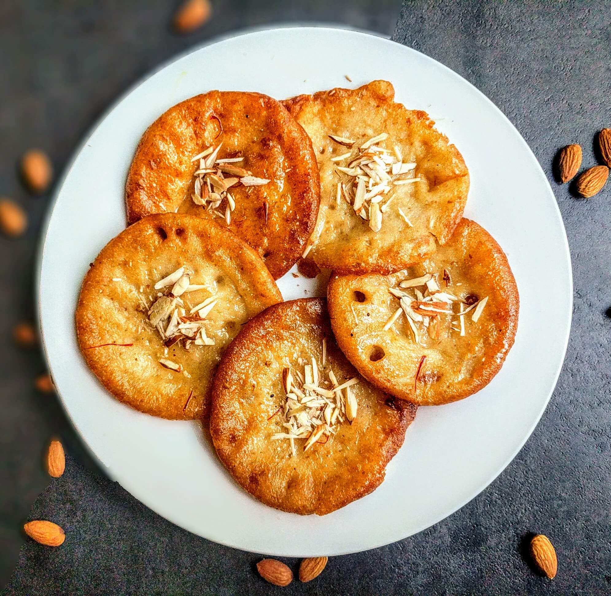

Delicious Malpua

Description
Malpua are traditional North Indian pancakes made with wheat flour, jaggery or sugar and cardamom powder. Various ingredients like semolina, fennel seeds, milk, khoya, coconut, yogurt and even fruits like banana are sometimes added to the malpua batter.
Ingredients
- Wheat Flour
- 1/4Cup Milk
- Fennel seeds
- Cardamom powder
- Sugar
- Water
- Ghee
Instruction to Prepare
- Mix mawa or milk powder in 1/4 cup slightly hot water or milk
- Stir to dissolve it.
- Add flour, fennel seeds and cardamom powder.
- Add more milk as needed and make a batter. It may take up to 1 & 1/2 to 3/4 cup milk for the entire recipe
- Ther is no soda used in this recipe, so if you like fluffy malpuas your will need to beat the batter very well for 1 minute. Set the batter aside until the syrup is ready. You can also ferment this for 4 hours.
Make Sugar Syrup
- Mix together sugar and water in a pot.
- Boil the syrup until it turns sticky or 1 string consistency.
- Heat 3 cups water in a wide pot and place the syrup pot in it to keep the syrup warm and prevent crystallizing. Alternately you can just stir in 2 tsp lemon juice.
Make Malpua
- Add 2 to 3 tbsps ghee to a deep pan and heat it on a medium flame.
- When the ghee turns hot, pour half ladle of batter about 2 to 3 tbsps.
- Do not spread the batter. it spreads on its own if it is of the right consistency.
- When the edges turn golden, flip and fry.
- If you make them with thin batter, then you will get them thin and only the edges turn crisp and golden.
- When malpua is done, remove from ghee. Add to the syrup directly. Make sure you stir the syrup well once before adding the malpuas.
- Remove them to a wide plate.
- Garnish malpuas with chopped pistachios and almonds.